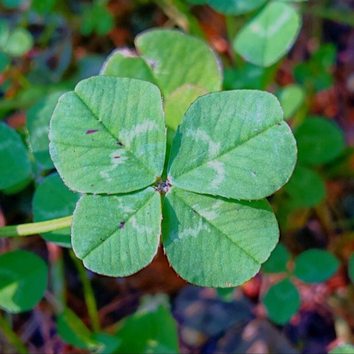

いちねこのYoutubeの公式（？）サイトです！よろしくお願いします
最近はpythonやHTML等でプログラミングをしてます
X(旧twitter)とyoutubeで活動しています
youtubeマイクラをしていますが最近雑学系の動画が増えてきました
X (旧twitter)適当なつぶやき・診断サイトで遊んだりしています
登録者今年中に100人になることです！
目標達成したいので登録お願いします
2024年
1月24日 10人達成（後付けなので正確にはわからないです）
6月5日 50人達成
公式ラインを作りました
配信などの告知をするので友達追加してみてください